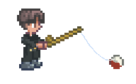

Безкоштовні водойми Вінниччини
Серед риболовних місць на Вінниччині є багато таких, на яких риболовля дозволена будь кому і будь-який час (окрім) нересту). На таких місцях, зариблення (запуск риби в водойму) здійснюється місцевою владою, і саме вона регулює скільки, і яку рибу буде запущено. На таких водоймах не діять ніякі особливі правила, окрім тих, що встановлює місцева влада. Загальні заборони це:
- Не глушити рибу.
- Не проводити вилов на електричні вудочки.
- Не проводити вилов риби сітками.
- Не забруднювати водойми шкідливими для риби речовинами.
Безкоштовні риболовні місця пустують частіше чим платні, тому що зловити на них рибу важче, через те, що її там зазвичай менше. Також багато браконьерів незважаючи на незаконність своїх дій, виловлюють в таких місцях рибу сітками, поки ніхто не бачить. Незважаючи на це, рибалки не завжди приходять на водойми лише для вилову риби. Деякі з них відвідують їх лише заради того, щоб відпочити та насолодитися природою, а вилов рибин є гарним доповненням до цього.
Безкоштовних риболовних місць на Вінниччині є дуже багато, але багато з них є не дуже популярними серед рибалок. Пропонується розглянути такі місця як Станіславчик та Гуральня